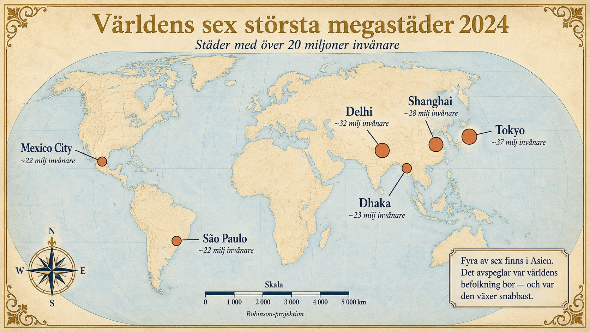
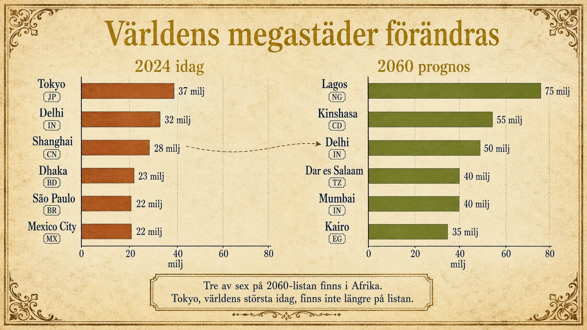
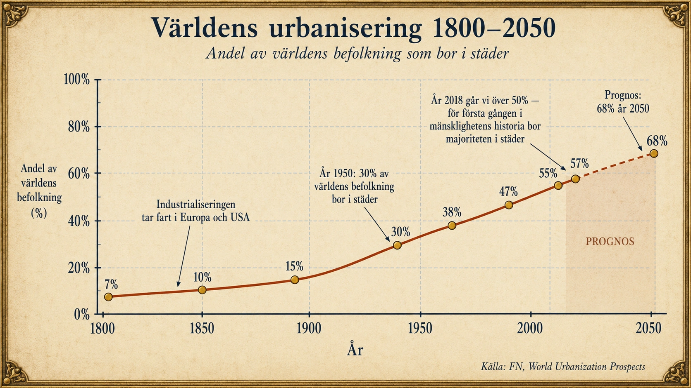
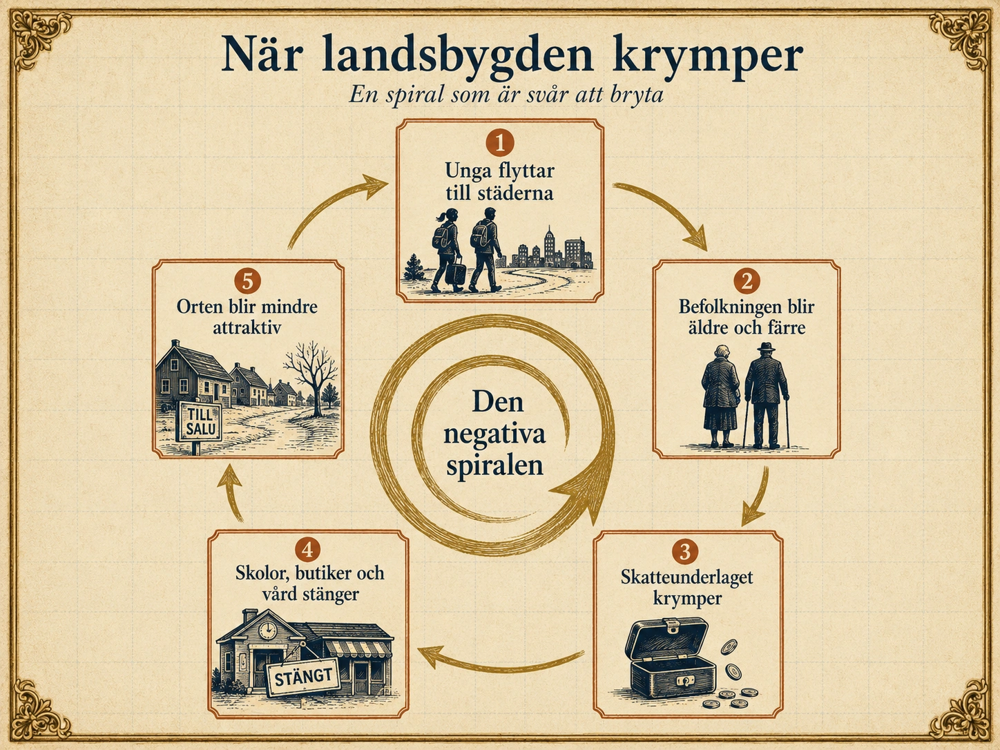

Urbanisering
— Städernas tillväxt och dess utmaningar —
Urbanisering – när människor flyttar till städer
I förra avsnittet såg vi att migration kan vara av många slag — inom länder, mellan länder, frivillig eller påtvingad. I detta avsnitt går vi djupare in på den största formen av migration i modern tid: urbaniseringen, alltså den enorma rörelsen av människor från landsbygd till städer som pågått i över 200 år och fortfarande pågår.
Vad menas med urbanisering?
Urbanisering betyder att en allt större andel av befolkningen bor i städer och tätorter. Det är viktigt att tänka på vad detta faktiskt innebär. Det handlar alltså inte bara om att städer växer — utan om att andelen människor som bor i städer ökar jämfört med landsbygden. En stad kan växa utan att urbaniseringen ökar, om landsbygden växer ännu mer. Och en stad kan krympa medan urbaniseringen ändå ökar, om landsbygden krymper ännu fortare.
Ett centralt begrepp för att mäta detta är urbaniseringsgrad — hur stor andel av ett lands eller världens befolkning som bor i städer. Om Sverige har en urbaniseringsgrad på 88 procent betyder det att 88 av 100 svenskar bor i städer eller tätorter, medan resten bor på landsbygden.
Urbaniseringen hänger nästan alltid ihop med större samhällsförändringar. När ett samhälle går från att vara ett jordbrukssamhälle till att bli ett industri- och tjänstesamhälle förändras både var arbetet finns och vilken sorts arbete som finns. I jordbrukssamhället behövs många händer på åkrarna. I industrisamhället behövs arbetare i fabriker, hamnar och byggprojekt. I tjänstesamhället behövs människor på kontor, sjukhus, skolor, butiker och i forsknings- och kulturmiljöer. Alla dessa nya arbeten har en gemensam egenskap: de finns främst i städer.
Det är därför urbaniseringen följer industrialiseringen som en skugga. Där industri och tjänster utvecklas, dit flyttar människor.
200 år av urbanisering
För omkring 200 år sedan bodde de flesta människor i världen på landsbygden. Städer fanns förstås — Rom hade en gång haft en miljon invånare, London närmade sig en miljon vid 1800-talets början, Beijing var stort, Konstantinopel var stort. Men de var undantag. Den absoluta majoriteten av människor levde i byar och arbetade med jordbruk eller hantverk knutet till jordbrukssamhället.
Sedan kom industrialiseringen. Fabriker behövde byggas där det fanns vatten, energi, transporter och människor som kunde arbeta. Städerna blev de naturliga platserna. England gick först — Manchester växte från 75 000 invånare år 1800 till över 700 000 år 1900. Tyskland följde. USA, Frankrike, Sverige och resten av Europa följde under decennierna efter. Idag pågår samma process — i ännu snabbare takt — i Kina, Indien, Bangladesh och stora delar av Afrika.
Siffrorna talar för sig själva. År 1950 bodde ungefär 30 procent av världens befolkning i städer. År 2018 hade andelen stigit till 55 procent. FN beräknar att omkring 68 procent av världens befolkning kommer att bo i städer år 2050. Urbaniseringen är därför inte en historisk händelse som ägt rum och avslutats — den pågår fortfarande, och den är en av de största geografiska förändringarna i mänsklighetens historia.
Push och pull – varför flyttar människor till städer?
Vi använder samma begrepp som i förra avsnittet — push- och pullfaktorer — för att förklara varför människor flyttar från landsbygd till stad.
Push-faktorerna är problem på landsbygden som gör att människor vill eller måste lämna. På många håll i världen är jordbruket inte längre tillräckligt lönsamt för att försörja en familj. Mekaniseringen — när maskiner ersätter mänskligt arbete — gör att färre människor behövs på åkrarna. En traktor kan göra det jobb tio bönder gjorde förr. Det är effektivt, men det betyder också att nio av tio inte längre har en plats på gården. Samtidigt kan torka, översvämningar, missväxt eller dåliga skördar göra livet osäkert. Skolor läggs ner. Sjukvården försvinner. Unga människor som ser på framtiden vill ha mer än vad landsbygden kan erbjuda dem.
Pull-faktorerna är allt som lockar i städerna. Här finns arbete — fler och mer varierade jobb än på landsbygden. Här finns högre löner. Här finns skolor och universitet, sjukhus och specialister, butiker, restauranger, biografer, museer. Här finns andra människor — vilket både ger socialt liv och nya möjligheter. Och kanske viktigast: här finns ett löfte om framtid. En person som flyttar till staden kanske inte vet exakt vad hen ska göra där, men hen vet att det finns fler möjligheter än hemma.
Tänk så här: urbanisering handlar ofta om hopp. Människor flyttar inte bara för att lämna något dåligt, utan också för att söka något bättre. Det är denna kombination av frånvaron av möjligheter på landsbygden och närvaron av möjligheter i staden som driver världens kanske största migrationsrörelse.
Megastäder – när städer blir gigantiska
När en stad når 10 miljoner invånare eller fler kallas den för megastad. Gränsen är godtycklig — det är inget magiskt som händer just vid 10 miljoner — men FN använder den för att klassificera och jämföra världens största städer.
I början av 1900-talet hade världen två megastäder: New York och London. År 2024 finns det omkring 35 megastäder. De största är Tokyo med omkring 37 miljoner invånare, följt av Delhi (32 miljoner), Shanghai (28 miljoner), Dhaka (23 miljoner), São Paulo (22 miljoner) och Mexico City (22 miljoner). Fyra av de sex största finns i Asien — det avspeglar var världens befolkning bor och var den växer snabbast.
Bland övriga viktiga megastäder finns Mumbai, Beijing, Karachi, Manila, Lagos, Kairo, Istanbul, Buenos Aires och New York. Lägg märke till att Europa knappt har några megastäder kvar — London och Paris är de enda som närmar sig gränsen.

Megastäderna är enormt viktiga för sina länder. Här finns ofta landets största universitet, sjukhus, företag, hamnar, banker, mediehus och politiska institutioner. De fungerar som motorer för ekonomisk utveckling. Tokyo står för en oproportionellt stor del av Japans BNP. Lagos genererar omkring en fjärdedel av Nigerias ekonomi. För människor från landsbygden i dessa länder är megastaden ofta enda chansen till social rörlighet — alltså möjligheten att förändra sin livssituation, klättra socialt, skaffa sig en utbildning eller starta ett företag och därmed bryta sig loss från fattigdom.
Men megastäder skapar också enorma problem. När en stad växer mycket snabbt hinner inte samhället bygga den infrastruktur — vägar, elnät, vattenledningar, avlopp, kollektivtrafik, sjukhus och skolor — som behövs för att alla invånare ska kunna leva ett bra liv. Resultatet blir bostadsbrist, trängsel, trafikkaos, luftföroreningar och brist på rent vatten. Avloppssystem hinner inte byggas ut. Sopor staplas på gatorna. Skolor blir överfulla och sjukvård räcker inte till.
Allra tydligast syns problemen i framväxten av slumområden — informella bostadsområden där människor bor under enkla förhållanden, ofta utan rinnande vatten, fungerande avlopp eller säker el. Dharavi i Mumbai är ett av världens mest kända slumområden, med över en miljon invånare på en yta som är mindre än två kvadratkilometer. Kibera i Nairobi har kanske 250 000 invånare i liknande täthet. I många latinamerikanska städer kallas slumområdena favelas, och i andra delar av världen kåkstäder eller informella bosättningar. För dem som bor där är livet ofta hårt och osäkert. Men det är samtidigt ofta bättre än det liv de skulle ha haft på landsbygden — vilket är varför människor fortsätter att flytta in.
När urbaniseringen går för snabbt
Det avgörande för en stads framtid är inte bara att den växer — utan hur den växer.
Sydkorea och Singapore är exempel på länder där urbaniseringen kunde planeras. När människor flyttade in i städerna byggdes infrastrukturen ut i nästan samma takt. Bostäder, vägar, kollektivtrafik och sociala system hängde med. Resultatet blev städer som idag är välmående och fungerande, även om de växt mycket snabbt.
Lagos och Karachi är exempel på motsatsen. Befolkningen växte snabbare än staden kunde bygga. Bostadsbrist, slum, trafikkaos och föroreningar blev resultatet. Lagos har idag över 15 miljoner invånare och förväntas bli en av världens största städer inom några decennier — men en stor del av befolkningen bor i informella bostadsområden utan grundläggande service.
När urbaniseringen går för snabbt uppstår också klasskillnader. De som har pengar bor i moderna områden med fungerande service, säkerhet och bra skolor. De som är fattiga trängs i sämre områden där allt brister samtidigt. Ofta växer en stad i två riktningar samtidigt — uppåt med skyskrapor och ner i informella bosättningar — och avståndet mellan de två världarna kan bli mycket större än någonsin tidigare i mänsklighetens historia.
Den gröna vågen – när människor flyttar åt andra hållet
Urbaniseringen är den dominerande rörelsen i världen, men det finns också en motrörelse: den gröna vågen.
Den gröna vågen är när människor väljer att flytta från städer till landsbygden eller mindre orter. Begreppet kommer från Sverige på 1970-talet, då många unga sökte ett enklare, lugnare och mer naturnära liv som motreaktion till storstadens stress och materialism. Den var en relativt liten våg då, men idéerna har levt vidare.
Idag finns en ny våg av motflyttning, driven av en helt ny faktor: distansarbete. När covid-19-pandemin slog till 2020 tvingades miljontals människor att arbeta hemifrån. Många upptäckte att de inte längre behövde bo nära kontoret — och vissa flyttade ut till mindre orter, byar och landsbygd. I Sverige sågs detta tydligt i orter som Visby, Åre och delar av norrlandskusten under 2020-2022.
Vad som lockar är vanligtvis en kombination: lägre boendekostnader, större bostad, närhet till natur, lugn för barnen, möjlighet att odla eller leva mer självförsörjande. För människor som arbetar på distans har det blivit ett verkligt alternativ. För andra är det fortfarande svårt — landsbygden saknar ofta service, arbete och socialt liv som städerna kan erbjuda.
Den gröna vågen är globalt sett mycket mindre än urbaniseringen. För varje person som flyttar från staden till landsbygden flyttar tjugo eller fler från landsbygden till staden. Men i vissa länder och under vissa perioder kan motrörelsen vara märkbar — och den kan vara viktig för att hålla landsbygden levande.
När landsbygden krymper
Urbaniseringen påverkar inte bara städerna. Den påverkar också de platser människorna lämnar.
När unga människor flyttar in till städerna blir landsbygden över tid äldre. De som är kvar är ofta över medelåldern, och när inga nya unga kommer in fortsätter befolkningen att minska. Det betyder att skatteunderlaget krymper — alltså den summa pengar kommunen får in i skatter för att finansiera skolor, vård, vägar och annan service. Med mindre skatteunderlag blir det svårare att hålla ut.
Skolorna är ofta först ut att läggas ner. I en by där det förr fanns 50 barn finns nu kanske 10. Då blir skolan dyrare per elev än vad kommunen har råd med, och skolan stängs. Då måste familjer skjutsa sina barn flera mil till närmaste skola — vilket gör orten ännu mindre attraktiv för nya familjer. Affärerna går samma väg. När kunderna blir för få stänger lanthandeln. Då måste de som är kvar köra långt för att handla. Då blir orten ännu mindre attraktiv.
Det är en negativ spiral: färre människor → mindre skatteunderlag → sämre service → mindre attraktivt → ännu färre människor. I Sverige har orter som Pajala och delar av Norrlands inland kämpat med denna spiral i decennier. Många byar har förlorat så mycket befolkning att de praktiskt taget upphört att existera som levande samhällen.
Samtidigt är landsbygden viktig på sätt som inte alltid syns i statistiken. Den producerar mat, skogsråvaror, energi från vattenkraft och vindkraft, och den hyser stora delar av landets naturvärden. Den är viktig för turism, kultur, friluftsliv och biologisk mångfald. Och dess invånare bär ofta på kunskap om landskapet, traditioner och hantverk som är svåra att ersätta. Därför är frågan om hur landsbygden kan hållas levande inte bara en fråga för dem som bor där — det är en fråga för hela samhället.
Blicken framåt — världens städer 2060
Vi har hittills tittat på världen som den ser ut idag. Men urbaniseringen står inte stilla. När dagens elever är vuxna och själva har familjer kommer världens karta över megastäder att se mycket annorlunda ut än den gör nu.
FN:s prognoser visar att urbaniseringens tyngdpunkt förskjuts dramatiskt under 2000-talets gång — från Asien, där den varit som mest intensiv under de senaste decennierna, till Afrika och delar av Sydasien, där befolkningen fortfarande växer snabbt och människor fortfarande lämnar landsbygden i stor skala.
Den enskilt mest dramatiska förändringen handlar om Lagos i Nigeria. Staden har idag omkring 15 miljoner invånare. Forskare beräknar att Lagos kan ha omkring 70 till 90 miljoner invånare år 2100 — kanske världens absolut största stad. Redan kring 2050 förväntas Lagos vara större än Tokyo är idag. Anledningen är Nigerias enorma befolkningstillväxt — landet förväntas ha över 700 miljoner invånare vid 2100, jämfört med dagens 220 miljoner — kombinerat med fortsatt urbanisering.
Liknande utveckling väntar Kinshasa i Demokratiska Republiken Kongo, Dar es Salaam i Tanzania och Kairo i Egypten. Och i Sydasien fortsätter Delhi, Mumbai och Karachi att växa kraftigt.
Samtidigt händer något historiskt unikt: Tokyo, som idag är världens största stad, börjar krympa. Japans befolkning minskar — landet är i stadium 5 av den demografiska transitionen vi gick igenom i avsnitt 3. När landets totalbefolkning sjunker börjar även dess största stad göra det. Världens megastäder har aldrig krympt förr.
Vad betyder det här? Det betyder att den värld du kommer leva i som vuxen kommer ha en annan geografisk tyngdpunkt än den värld vi har idag. De stora besluten om hur städer ska planeras, hur energi ska produceras, hur migration ska hanteras — de besluten kommer i större utsträckning fattas i Lagos, Mumbai, Delhi och Kinshasa än i Tokyo, New York eller London. Den globala balansen mellan kontinenterna förändras under 2000-talets gång.

Det är inte bara ett diagram — det är ett porträtt av den värld du växer in i.
Sammanfattning
Urbanisering är en av de största förändringarna i världens geografi under de senaste 200 åren. Driven av push-faktorer som fattigdom, mekanisering av jordbruket och brist på service på landsbygden, samt pull-faktorer som arbete, utbildning, sjukvård och framtidshopp i städerna, har över hälften av världens befolkning blivit stadsbor — och andelen fortsätter att stiga.
Megastäderna visar både urbaniseringens möjligheter och dess problem. De är motorer för ekonomisk utveckling och social rörlighet — men de skapar också bostadsbrist, slum, föroreningar och stora klasskillnader när de växer snabbare än samhället kan bygga.
Den gröna vågen är en motrörelse där människor flyttar från stad till landsbygd, oftast i sökandet efter lugn, natur och billigare boende. Globalt är den mycket mindre än urbaniseringen, men den har fått ny kraft genom distansarbete.
Och landsbygden själv påverkas djupt av urbaniseringen. När unga flyttar och bara äldre stannar krymper skatteunderlaget, service försvinner, och en negativ spiral kan börja som är svår att bryta.
Det avgörande är inte att städer växer — utan hur de växer. Och inte att landsbygden krymper — utan hur den kan hållas levande. Båda frågorna är centrala för hur 2000-talets värld kommer att se ut.
I nästa avsnitt går vi vidare till den fråga som ligger bakom mycket av det vi sett i hela kapitlet: hur befolkning och resurser hänger ihop, och vad det innebär att jorden ska försörja en växande befolkning under 2000-talet.
Urbanisering – när människor flyttar till städer
I förra avsnittet såg vi att migration kan vara av många slag. I detta avsnitt går vi djupare in på den största formen av migration i modern tid: urbaniseringen — den enorma rörelsen av människor från landsbygd till städer.
Vad menas med urbanisering?
- Urbanisering = andelen som bor i städer ökar
- Urbaniseringsgrad = hur stor andel av befolkningen som bor i städer
- Sverige har en urbaniseringsgrad på 88 procent
- Urbanisering hänger ihop med industri- och tjänstesamhället
Urbanisering betyder att en allt större andel av befolkningen bor i städer och tätorter.
Tänk så här: det handlar inte bara om att städer växer — det handlar om att andelen människor som bor i städer ökar jämfört med landsbygden.
Ett viktigt begrepp är urbaniseringsgrad — alltså hur stor andel av befolkningen som bor i städer. Om Sverige har en urbaniseringsgrad på 88 procent betyder det att 88 av 100 svenskar bor i städer eller tätorter.
Urbaniseringen hänger ihop med hur samhället förändras. När ett land går från att vara ett jordbrukssamhälle till att bli ett industri- och tjänstesamhälle, ändras var arbetet finns:
- I jordbrukssamhället behövs människor på åkrarna — alltså på landsbygden.
- I industri- och tjänstesamhället behövs människor i fabriker, kontor, sjukhus, skolor, butiker — alltså i städerna.
Det är därför människor flyttar till städerna.
200 år av urbanisering
För omkring 200 år sedan bodde de flesta människor i världen på landsbygden. Städer fanns, men de var små jämfört med idag. Människor arbetade med jordbruk eller hantverk knutet till jordbruket.
Sedan kom industrialiseringen. Fabriker byggdes i städerna eller där det fanns bra transporter och energi. Människor flyttade dit för att få arbete.
- England gick först — Manchester växte från 75 000 invånare år 1800 till över 700 000 år 1900.
- Tyskland och USA följde under 1800-talet.
- Sverige följde under sent 1800-tal och tidigt 1900-tal.
- Idag pågår samma process i Kina, Indien, Bangladesh och stora delar av Afrika.
Siffrorna är slående:
- År 1950: ungefär 30 procent av världen bodde i städer
- År 2018: ungefär 55 procent
- År 2050 (prognos): omkring 68 procent
Kurvan visar hur stor andel av världens befolkning som bor i städer.
- År 1800 bodde bara cirka 7 procent av världens befolkning i städer
- Kurvan stiger långsamt under 1800-talet och brantare under 1900-talet
- År 2018 gick vi över 50 procent — för första gången i mänsklighetens historia
- År 2050 beräknas vi vara på 68 procent
Fundera: Vad tror du händer med en värld där 68 procent av alla människor bor i städer?

Push och pull – varför flyttar människor till städer?
- Push = sådant som trycker bort människor från landsbygden
- Pull = sådant som lockar människor till städerna
- Urbanisering handlar både om att fly något dåligt OCH att söka något bättre
Vi använder samma begrepp som i förra avsnittet — push- och pullfaktorer — för att förklara varför människor flyttar.
Push-faktorerna är problem på landsbygden som gör att människor vill eller måste lämna:
- Brist på arbete och låga inkomster från jordbruk
- Mekanisering av jordbruket — när maskiner ersätter mänskligt arbete (en traktor kan göra jobbet som tio bönder gjorde förr)
- Torka, översvämningar och missväxt
- Skolor och sjukvård stänger
- Unga ser ingen framtid där
Pull-faktorerna är allt som lockar i städerna:
- Fler arbeten och högre löner
- Skolor, universitet och sjukhus
- Butiker, restauranger, biografer och kulturliv
- Andra människor — socialt liv
- Hopp om en bättre framtid
Tänk så här: urbanisering handlar ofta om hopp. Människor flyttar inte bara från något dåligt — de flyttar mot något bättre.
Megastäder – när städer blir gigantiska
- Megastad = stad med minst 10 miljoner invånare
- År 1900: 2 megastäder (New York och London)
- År 2024: cirka 35 megastäder
- De flesta finns i Asien
- Social rörlighet = möjlighet att förändra sin livssituation
När en stad når 10 miljoner invånare eller fler kallas den för megastad. FN använder den gränsen för att jämföra världens största städer.
Antalet megastäder har vuxit dramatiskt:
- År 1900: 2 megastäder (New York och London)
- År 2024: cirka 35 megastäder
De sex största är:
- Tokyo (Japan) — 37 miljoner
- Delhi (Indien) — 32 miljoner
- Shanghai (Kina) — 28 miljoner
- Dhaka (Bangladesh) — 23 miljoner
- São Paulo (Brasilien) — 22 miljoner
- Mexico City (Mexiko) — 22 miljoner
Fyra av sex finns i Asien. Det avspeglar var världens befolkning bor — och var den växer snabbast.
Kartan visar världens sex största megastäder år 2024.
- Varje röd cirkel är en megastad — cirkelns storlek visar hur många människor som bor där
- Tokyo har den största cirkeln — världens största stad
- Lägg märke till var de finns: fyra av sex är i Asien (Tokyo, Delhi, Shanghai, Dhaka)
- Latinamerika har två (São Paulo och Mexico City)
- Europa, USA och Afrika har inga av världens sex största
Fundera: Varför finns det inga megastäder i Europa, USA eller Afrika söder om Sahara på denna lista över de sex största?
Möjligheter och problem i megastäder
- Megastäder skapar både möjligheter och problem
- Infrastruktur = vägar, vatten, el, avlopp, kollektivtrafik
- När staden växer för snabbt hinner inte infrastrukturen byggas ut
- Slum är informella bostadsområden med dåliga levnadsvillkor
Möjligheterna
Megastäder kan ge människor mycket:
- Fler arbeten och bättre lön
- Bättre utbildning och sjukvård
- Större marknader för företag
- Social rörlighet — möjligheten att förändra sin livssituation, klättra socialt och bryta sig loss från fattigdom
För människor från fattig landsbygd är megastaden ofta enda chansen att förbättra livet.
Problemen
Men när en stad växer för snabbt hinner inte infrastrukturen byggas ut. Infrastruktur betyder:
- vägar
- elnät
- vattenledningar
- avlopp
- kollektivtrafik
- sjukhus
- skolor
Om tusentals människor flyttar in varje vecka men det inte byggs bostäder och vägar i samma takt, växer slumområden fram — informella bostäder där människor saknar rinnande vatten, fungerande avlopp och säker el.
Världens mest kända slumområden:
- Dharavi i Mumbai — över 1 miljon invånare på mindre än 2 km²
- Kibera i Nairobi — omkring 250 000 invånare i liknande täthet
- Favelas i Brasilien (t.ex. Rocinha i Rio de Janeiro)
För dem som bor där är livet ofta hårt — men ofta bättre än det liv de skulle haft på landsbygden. Det är därför människor ändå fortsätter att flytta in.
När urbaniseringen går för snabbt
Det avgörande är inte att städer växer — utan hur de växer.
Sydkorea och Singapore är exempel på länder som lyckades planera sin urbanisering. Bostäder, vägar och kollektivtrafik byggdes ut i samma takt som befolkningen växte. Resultatet: välmående städer som fungerar.
Lagos och Karachi är motsatsen. Befolkningen växte snabbare än staden kunde bygga. Resultatet: bostadsbrist, slum och trafikkaos.
När urbaniseringen går för snabbt uppstår också stora klasskillnader:
- De som har pengar bor i moderna områden med säkerhet och bra skolor
- De som är fattiga trängs i sämre områden där allt brister
Den gröna vågen – när människor flyttar åt andra hållet
- Gröna vågen = när människor flyttar från stad till landsbygd
- Tre vågor: 1970-talet, 2000-talet, och 2020+ med distansarbete
- Globalt sett är gröna vågen mycket mindre än urbaniseringen
- Distansarbete har gjort gröna vågen starkare på 2020-talet
Urbaniseringen är den största rörelsen. Men det finns också en motrörelse: den gröna vågen.
Den gröna vågen är när människor flyttar från städer till landsbygden. Begreppet kommer från Sverige på 1970-talet, då många unga sökte ett enklare, lugnare och mer naturnära liv.
Idag finns en ny våg, driven av distansarbete. När covid-19-pandemin slog till 2020 tvingades miljontals människor att arbeta hemifrån. Många upptäckte att de inte längre behövde bo nära kontoret — och vissa flyttade ut till mindre orter. I Sverige sågs detta i orter som Visby, Åre och delar av norrlandskusten under 2020–2022.
Vad lockar?
- Lägre boendekostnader
- Större bostad och egen trädgård
- Närhet till natur
- Lugn för barnen
- Möjlighet att odla eller leva mer självförsörjande
Den gröna vågen är globalt sett mycket mindre än urbaniseringen — för varje person som flyttar från staden till landsbygden flyttar tjugo eller fler andra håll. Men i vissa länder och under vissa perioder kan den vara märkbar och viktig.
När landsbygden krymper
- När unga flyttar krymper landsbygdens skatteunderlag
- Skatteunderlag = pengar kommunen får i skatt för att betala skola, vård och service
- Det blir en negativ spiral: färre människor → mindre skatteunderlag → sämre service → ännu färre människor
- I Sverige drabbas särskilt Norrlands inland
Urbaniseringen påverkar inte bara städerna — den påverkar också landsbygden.
När unga flyttar in till städerna blir kvar en allt äldre befolkning. Det betyder att skatteunderlaget krymper — alltså de pengar kommunen får i skatt för att betala skolor, vård och service.
Tänk så här: en negativ spiral börjar:
- Skolorna stängs först. I en by där det fanns 50 barn finns nu kanske 10. Då blir skolan för dyr.
- Familjer flyttar bort eftersom barnen måste skjutsas långt.
- Affärerna stänger när kunderna blir för få.
- Då blir orten ännu mindre attraktiv — och fler flyttar.
I Sverige har orter som Pajala och delar av Norrlands inland kämpat med denna spiral i decennier.
Bilden visar hur landsbygdens nedåtgående spiral fungerar.
- Unga flyttar till städerna
- Befolkningen blir äldre och färre
- Skatteunderlaget krymper — kommunen får mindre pengar
- Skolor, butiker och vård stänger
- Orten blir mindre attraktiv — fler flyttar
Och så börjar det om från början. Det är därför det kallas en spiral.
Fundera: Hur kan man bryta en negativ spiral som den här?

Samtidigt är landsbygden viktig. Den producerar:
- mat
- skogsråvaror
- energi (vattenkraft, vindkraft)
- naturvärden för turism, friluftsliv och biologisk mångfald
Därför behöver ett land både fungerande städer och en levande landsbygd.
Blicken framåt — världens städer 2060
- Urbaniseringen flyttar från Asien till Afrika och Sydasien
- Lagos kan bli världens största stad — kanske 70–90 miljoner invånare år 2100
- Tokyo börjar krympa eftersom Japans befolkning minskar (stadium 5)
- Den värld du växer in i kommer ha en annan karta än dagens
Urbaniseringen står inte stilla. När dagens elever är vuxna kommer världens megastäder att se mycket annorlunda ut.
FN:s prognoser visar att tyngdpunkten förskjuts från Asien till Afrika och Sydasien.
Den mest dramatiska förändringen handlar om Lagos i Nigeria:
- Idag har staden cirka 15 miljoner invånare
- År 2100 kan Lagos ha 70–90 miljoner — kanske världens största stad
- Redan kring 2050 förväntas Lagos vara större än Tokyo är idag
Liknande tillväxt väntar Kinshasa (DR Kongo), Dar es Salaam (Tanzania) och Kairo (Egypten).
Samtidigt händer något helt nytt: Tokyo, idag världens största stad, börjar krympa. Japans befolkning minskar — landet är i stadium 5 (kommer du ihåg från avsnitt 3?). När totalbefolkningen sjunker börjar även Tokyo göra det. Detta är historiskt unikt — världens megastäder har aldrig krympt förr.
Bilden visar ett stapeldiagram med två grupper sida vid sida.
- Vänster grupp: världens sex största megastäder idag (2024)
- Höger grupp: världens sex största prognos för 2060
Lägg märke till:
- Vilka städer försvinner från listan (Tokyo, Shanghai, São Paulo, Mexico City)
- Vilka städer dyker upp som nya stora städer (Lagos, Kinshasa, Dar es Salaam, Mumbai, Kairo)
- Hur Afrika blir mycket viktigare — från noll till tre av de sex största
Fundera: Hur kommer den värld du växer in i som vuxen att skilja sig från den dina föräldrar lever i nu?
Sammanfattning
- Urbanisering = andelen som bor i städer ökar
- Driven av push (problem på landsbygden) och pull (möjligheter i städerna)
- Världen har gått från 30% år 1950 till 55% år 2018
- Megastäder skapar både möjligheter och problem
- Den gröna vågen är motrörelsen — liten globalt men växande
- Landsbygden påverkas djupt, ofta med negativ spiral
Urbanisering är en av de största förändringarna i världens geografi under de senaste 200 åren. Mer än hälften av världens befolkning bor nu i städer, och andelen fortsätter att stiga.
Det avgörande är inte att städer växer — utan hur de växer. Och inte att landsbygden krymper — utan hur den kan hållas levande. Båda frågorna är centrala för 2000-talets värld.
I nästa avsnitt går vi vidare till frågan som ligger bakom mycket i hela kapitlet: hur befolkning och resurser hänger ihop.
Den planerade och den oplanerade staden
I standardtexten såg vi att det avgörande för en megastads framtid inte är att den växer, utan hur den växer. Sydkorea och Singapore lyckades planera sin urbanisering medan Lagos och Karachi inte gjorde det. Här tittar vi närmare på varför.
Frågan är viktigare än den verkar. Under de kommande tre decennierna kommer omkring 2,5 miljarder människor att flytta in till världens städer. De flesta av dessa städer ligger i Afrika och Asien. Hur dessa länder klarar att hantera urbaniseringen kommer att forma 2000-talets värld mer än kanske någon annan enskild fråga. Om det går bra kan över en miljard människor klättra ur fattigdom in i välmående städer. Om det går dåligt kan vi se de största slumområdena i mänsklighetens historia.
Vad gör skillnad?
Forskare som studerar megastäders utveckling brukar peka på fem faktorer som tillsammans avgör hur det går.
1. När urbaniseringen började
Detta är kanske den viktigaste faktorn. Storbritannien började urbaniseras under tidigt 1800-tal — då industriarbete var det dominerande ekonomiska systemet och staten var relativt svag. Manchester och Birmingham växte kaotiskt under decennier. Slum var normen. Charles Dickens beskrev det med fasa. Stadsplanering kom till senare, ofta som en reaktion på just slumområdenas problem.
Sydkorea började urbaniseras under sent 1900-tal — då både statskapacitet och teknik var mycket mer utvecklade. Seoul kunde planeras från början. Tunnelbana, motorvägar och offentliga bostäder byggdes ut systematiskt.
Lagos och Karachi, däremot, började sin moderna urbanisering efter självständigheten under sent 1900-tal, men deras stater var (och är) ofta svaga, ekonomierna fattiga, och tidsperspektivet kort. Den infrastruktur Sydkorea kunde bygga upp på 30 år har Nigeria och Pakistan inte haft samma möjlighet till.
Det är en orättvis startposition. Och den syns i städernas utveckling.
2. Statskapacitet
Att planera en megastad kräver en stat som kan agera långsiktigt och samordnat. Det innebär att staten måste:
- ha pengar att investera i infrastruktur
- ha förmågan att fatta planeringsbeslut och driva igenom dem
- ha tillräcklig kontroll över marken för att kunna bygga
- ha tjänstemän som inte är korrumperade
- ha trovärdighet som gör att invånare följer regler
I länder där dessa förutsättningar finns — Sydkorea, Singapore, Tyskland, Japan, Frankrike — kan staden planeras. I länder där de saknas eller är svaga — Nigeria, Pakistan, Demokratiska Republiken Kongo — blir staden vad människor själva bygger, ofta utan formell tillåtelse.
Lagos är ett fascinerande exempel. Mer än 70 procent av invånarna bor i informella bostäder. Mer än 60 procent arbetar i den informella ekonomin — utan kontrakt, utan socialförsäkring, utan statlig registrering. Det är inte att människorna gör fel — det är att staten inte kan organisera samhället tillräckligt för att alla ska kunna leva inom dess ramar.
3. Markpolitik
Hur mark fördelas och prissätts är avgörande. I Singapore äger staten omkring 90 procent av all mark. Det gör att regeringen kan bestämma var skolor, sjukhus, bostäder och industri ska placeras. I Tokyo och Seoul finns starka statliga regler för markanvändning och offentliga investeringar i kollektivtrafik som styr stadens utveckling.
I många afrikanska och latinamerikanska megastäder, däremot, finns oklara markrättigheter. Människor flyttar in och bygger sina egna bostäder på mark de inte formellt äger. När staden senare vill bygga vägar, dra fram el eller riva för förbättringar uppstår konflikter. Är dessa människors hem skyddade? Eller kan de bara rivas? Frågan om markrättigheter är central för stadsplaneringens möjligheter.
4. Kollektivtrafik
Det är värt att stanna vid denna. Kollektivtrafik är avgörande för en megastad. Bara den kan ge alla invånare verklig tillgång till alla delar av staden. Och bara den kan göra det miljömässigt hållbart — privatbilism i en stad med 20 miljoner invånare skulle vara en katastrof för luft, klimat och utrymme.
Tokyo har världens kanske bästa kollektivtrafik. Tunnelbana, pendeltåg och buss täcker varje del av staden. Det är möjligt att leva ett rikt liv utan bil. Seoul, Singapore, Hong Kong och Shanghai följer samma modell.
I Lagos har det länge inte funnits ens en fullvärdig tunnelbana. De första linjerna börjar nu byggas, men kollektivtrafiken är fortfarande dominerad av privata minibussar (danfos) som är osäkra, dåligt reglerade och otillförlitliga. Trafikstockningar är legendariska — det kan ta tre timmar att åka tio kilometer. Konsekvensen är att fattiga människor isoleras i sina bostadsområden utan möjlighet att lätt nå jobb och möjligheter i andra delar av staden.
5. Vilken ekonomi staden bygger på
Detta är kanske den mest subtila faktorn. Tokyo, Seoul, Singapore och Shanghai byggde sina megastäder på exportindustri och senare högteknologi och tjänster. Det skapade tillräckligt välstånd för att finansiera infrastruktur, utbildning och offentliga tjänster.
Lagos, Karachi och delar av Mumbai byggdes mer på informell ekonomi — gatuhandel, små verkstäder, hushållsarbete, transport. Det skapar arbete men inte tillräckligt med skatteintäkter för staten. Och det skapar ett samhälle där en stor del av befolkningen är osynliga för officiella system.
Det är inte människornas fel. Det är ekonomisk struktur som hänger ihop med hela landets utvecklingsnivå. Men det får direkta konsekvenser för stadens förmåga att fungera.
Två svängar att fundera på
Den första: Är planerad urbanisering alltid bättre? Inte nödvändigtvis. Singapore är ett välmående samhälle men också ett auktoritärt sådant — staten har stor makt över medborgarnas liv. Sydkorea byggde sin urbanisering under en militärdiktatur på 1960- och 70-talet. Att en stad är välplanerad betyder inte automatiskt att den är fri.
Och oplanerade städer har också sina kvaliteter. Lagos är kaotisk, men också otroligt dynamisk. Dharavi i Mumbai har över 200 000 företag inom sina två kvadratkilometer — en informell ekonomi som genererar omkring en miljard dollar per år. Bristen på regler skapar problem, men också anpassningsförmåga och kreativitet.
Den andra: Kan en oplanerad stad bli planerad? Detta är 2000-talets stora geografiska och politiska fråga. Lagos, Dar es Salaam, Dhaka och dussintals andra megastäder kommer att fortsätta växa. Frågan är inte om de växer, utan om deras stater kan utveckla kapaciteten att börja styra utvecklingen. Det handlar om långsamma, ihärdiga investeringar i kollektivtrafik, bostäder, utbildning och institutioner. Det är inte sexigt, det är inte snabbt. Men det är detta som avgör.
Bortom megastäderna — globalt och lokalt
Det är värt att avsluta med en bredare reflektion. Det är lätt att fastna i megastäderna eftersom de är så imponerande och dramatiska. Men en stor del av världens urbanisering sker faktiskt i mindre städer — städer med 100 000 till 500 000 invånare som växer snabbt utan att hamna i världspressen.
I dessa städer kan utvecklingen vara annorlunda. De är ofta mer hanterbara. Lokala politiker har bättre kontroll. Avståndet mellan invånare och beslutsfattare är mindre. Många forskare anser att framtidens hållbara urbanisering kommer att handla mer om dessa städer än om de svindlande megastäderna.
Och i Sverige? Vi har inga megastäder — Stockholm är en relativt liten stad i globalt mått. Men frågorna om planerad kontra oplanerad urbanisering finns ändå. Hur ska Sveriges växande städer hantera bostadsbrist? Hur ska de balansera utbyggnad med miljö och bevarande? Hur ska de hantera segregation? Det är samma frågor i annan skala. Och svaren — eller bristen på svar — kommer att forma livet för svenska elever som börjar arbeta och söka bostad de kommande 10-20 åren.
I nästa avsnitt går vi vidare till den bredare bakgrunden: hur befolkningen och jordens resurser hänger ihop, och vad det innebär att jorden ska försörja en växande befolkning.
Vill du veta mer?
Laddar flipcards …
Laddar frågor ...
Demografi-piloten. Mer innehåll kommer.